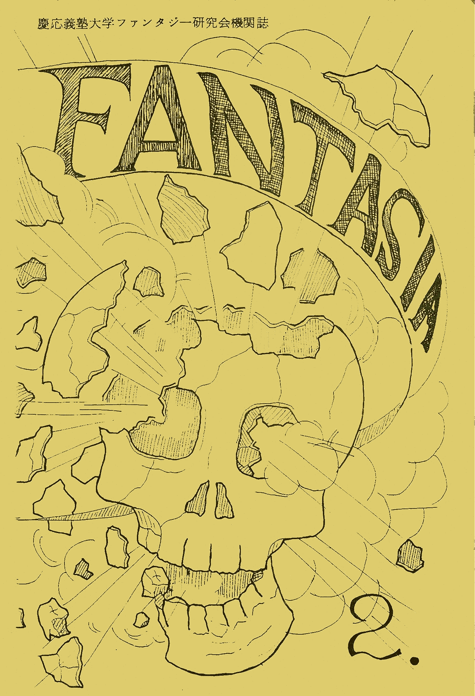

|  |
index
慶應義塾大学ファンタジー研究会機関誌
F a n t a s i a ～ ファンタジア ～ 第２号
Contents
| 自己紹介 | |
|---|---|
| おーの よしえ | 松 岡 美 佳 |
| 大宮 淳（仲尾 弘） | 鈴 木 朝 子 |
Copyright (c) 2026 All rights reserved. 本ページの文書・画像の閲覧および紹介は自由ですが、許可なく転載・複製・再配布することを禁じます。
P1 ▲目次に戻る
The Straw ☆ Millionaire
なんか書けといわれ 駄文を書いたのだが、どーしようもなく自己嫌悪に陥り それはやめにして、マンガのようなものを描いてしまった。「ワーイ 楽だったぞー ヨカッたヨカッたんじゃ ＳＦ大会に行こうと行ってきたら、又 自分の作品のせこさに落ち込んでしまったケド、まあ出すっきゃないでしょう。
“わらしべ長者（The Straw ☆ Millionaire）”というのは続けようと思えばいくらでも長くできるのですが…。クイズ 最後のコマは何でしょう？
このところ生きながら眠っているという感じ 何かやりたい。
P4 ▲目次に戻る
今にファンタジーだって
向 井 洪
ファンタジーは人類の夢、人類の進歩の原動力。だが、ＳＦはファンタジーより強い。ＳＦは今やメジャーとなった。そして、ＳＦの科学は、人類の進歩の象徴である。ＳＦは、かなり硬派で真直で未来へ向ってはばたく。ファンタジーは、フワフワしてつかみどころなく、過去へ、太古へと沈んでゆく。両者がいかに違うか、道行く人々にきいてみるとよくわかる。
レポーター 「ちょっと失礼します。ＳＦとは、どういうものですか。」
通行人Ａ 「科学が進歩した未来の社会あるいは、宇宙を舞台とする空想小説。」
レポーター 「ちょっとすいません。ファンタジーの物語とはどういう物語をいうんでしょう。」
通行人Ｂ（実はファン研会員）「ファンタジーというのは、空想小説であり、その上、ほら、あれで、夢が魔法して龍がとっても幻想的な、つまり何というか、その、あははっ、ははっ、はははは………」（走り去る。）
だからＳＦは、いつでもどこでも堂々と読まれ、人々は明るい日射しの中で、ＳＦについてにこやかに語り合う。ファンタジーは、人々が寝静まったころ、布団の中でランブをともしてこっそり読まれ、そのことについては世間に知られてはならない。見つかると逮捕される。ＳＦには、科学という社会的権威が、うしろからシッカリと支えているのだが、ファンタジーは、ゴブリンとか、ドラゴンとかいう反社会的な得体の知れないものが、うしろからシッカリと足を引っぱっているのである。
SFというのも、本当は、それほどはっきりと定義できる分野ではない。それに、ＳＦの“サイエンス”くらい奇妙なサイエンスもない。コンピューターが人格を持ち、亜光速飛行が可能になり、宇宙人が攻めてくるくらいはいい。タイムマシンができ、ワープ航法が開発され、異次元世界へ旅出ち、パラレルワールドが見つかる。この辺までは、まあ、いい。人類が超能力を使い、波動ガンを片手に宇宙を駆けまわる。ちょっと待ちなさい。これは本当に科学なんだろうか。科学というのは、科学的なものと非科学的な夢物語とを、はっきり区別する。もっと厳しいものではなかったのか。
レポーター 「どう思いますか。」
通行人Ｃ 「そういうふうに、科学を神聖視する見方は、もう古い。もし非科学的な現象に遭遇しても、その現象を頭から否定することなく、逆にそれまでの科学を疑がってみる。それが現代科学の姿勢なのだよ。」
レポーター 「あの、お、お名前を……」
通行人Ｃ 「いや、名乗るほどの者でも……」（静かに歩み去る）
だから、ＳＦには超能者が出てきてもよいのである。ニュータイプも大歓迎。魔法使いは、だめ。突然変異の恐しい怪物は出てきてもよい。ドラゴンはいけない。そして、ＳＦマニアは、ガンダルフが呪文で、巨大な岩を砕くのを見ると鼻でせせら笑うが、超能力者が念力で、小惑星を破壊すると、万歳三唱して涙する。ＳＦは強い。
考えてみるとＳＦも、ここまで来るのに苦労しているのだ。美女と野獣と宇宙船が出てくるだけの低俗小説。似非科学の子供だまし。こういう幾多の偏見をはねとばし、現在のＳＦがあるのだ。ファンタジーとは格が違うのだよ。（アッ、つめたい！）
ＳＦは腐ってもＳＦである。どんなにつまらない内容でも、科学が使つてあればＳＦで通用する。しかし、ＳＦには、どんなにすばらしいテーマと内容を持っていても、ＳＦで片付けられてしまう。ＳＦで芥川賞はとれない。
ファンタジーの腐ったのは、ただの妄想である。だが、ファンタジーは、ちょっとまちがえると、万人の心を捕える大文学になってしまうかもしれないのだ。人間の夢と創造性が最大限に発揮できる分野なのだから。ファンタジーに対して、世間が抱いている偏見や誤解が解ければ、ファンタジーは浮上する。龍やゴブリンと仲良くなって、共に舞い上がるのだ。大空へ向って共に舞い上が……アッ、コラ、やめんか、あっ、あしを引っぱるのはやめろというのに……。
P6 ▲目次に戻る
マーチ・フェア（三月祭り）
松 岡 美 佳
時々、「自分自身」が何者なのかわからなくなる。そんな「自分」を紹介するのは、むずかしい。けれど、人間恐怖症の私は、人前で話すよりか、紙に向って話す方が正直になれるかもしれない。
一口では言えない私の性格は、ひどく怠慢かと思えば、ひどく神経質である。しゃべることすら億劫な時があれば、しゃべりすぎる時もある。（その結果、相手を怒らせるか、うんざりさせる。）「言葉」って、人間が使う魔法の一つだ。
ところで、なぜ私が「ファンタジー」を愛するのかというと、一つには現実逃避ができるからだ。そう、狭くて、埃の積もった下宿にいながら、一度本を開けるや、たちまちアラゴルン達の旅の仲間に加わることができる。その間、たとえゴキブリが机の上を歩こうと、廊下で他の下宿学生が、いつものように四時間余り誰かさんと電話でわめいていようが、私は、ファンタジーの世界を流浪している。けれど、ここ二、三年のうちに、現実世界こそ、まさに「ファンタジー」そのものじゃないかって考えるようになった。龍や魔女や小人には会えないけれど。たとえば去年、立て続けに二人の友が死んだ。それ以来、私はリデルの役を演じている。「思い出」の中に二人を求め…。たとえば… ココデ コトバ ショウメツ─
P13 ▲目次に戻る
遠 来
門 倉 直 人
夕方はなぜ音が遠くに聞こえるのだろう。近くの鉄橋を通る列車の音も、工事現場の作業の音も、昼間ほど近くには聞こえない。だから、いやだ。夕方は。一郎は思う。タ方は全てが遠くなってしまう。思わず家へ帰る足が早くなる。背中のランドセルがはずみだした。
一本道を通ってもう少しで家だという頃、いつのまにか一人の小さな、恐らくは女の子が隣りを歩いていた。家がわからないのよ。唐突にその子が話しかける。一郎はすぐには何も言えず相手を見るだけだった。ふーん、住所は。しかし、その子はただ笑って言った。ねえ、妖精って信じる？ いや。でもあたしは死んでもないし、生きてもないの。一郎は気味が悪くなつた。一郎の右手首をその子がぎゅっと強く握った。家まで連れてってよ。本当は目も良く見えないのよ。影さえあたしについてきてくれない。一郎はもうたまらなくなった。走り出していた。家の明りが見えてほっとすると、もうその子はいなかった。父さんは帰ってきているようだ。一郎の母さんは出産のため入院していた。
家に入ると父さんがちょうど出かけようとするところだった。一郎、父さんは母さんの様子見に病院へ行ってくる、母さんちょっと具合悪いそうだ。
とっさに一郎は理解した。右の手首が突然しめつけられる様に痛んだ。
P15 ▲目次に戻る
炎（誰もここから生きて出られない）
仲 尾 弘
（仲 尾 弘）
ボクハ、ジョウチョフアンテイナ、ニンゲン、ダ、ニジュウジンカクテキ、ニ、セイカクガ、カワルトキ、ガ、アル、コウゴキタイ。
P17 ▲目次に戻る
もとは虹と相対性の話だった
鈴 木 朝 子
P18 ▲目次に戻る
ファンタジーやＳＦを読むこと ─ このことは私にとってはルネ・マグリットやＭ・Ｃ・エッシャーや安野光雅の絵を見ること、星を見ること、夕陽を見つめ夕焼けの朱さに感動すること、電車の中にすわって外をながめること、道を大股でゆっくり歩くことなどに通じるところがある（つまり全部私の性格から来る趣味）
また私は好き嫌いでものごとをはかる人間であり、特に本（漫画を含む）についてはすぐ『嫌いなどと言ったりする。しかし自分が良いと思ったものは他人が何といおうと自分にとつては“良い”のだから気を悪くなさらぬように……。
ところで私は毎週来ていますが今は少なくともＦＴ研をやめるつもりはありませんから、皆さんもやめずに来てもっとＦＴ研を盛りたてましょうね ─ 。
P19 ▲目次に戻る
**** 合宿報告 ****
一、遅れて来たのは誰だ？
八十二年の夏も終りに近い八月二十二日、午前十時のことです。東京駅八重州中央口前方の「白鳥の像」の前に、我らファンタジー研究会のメンバーは集結したのでありました。「白鳥の像」というからには、大理石の白鳥が口から水でも吹いているのかと思ったら、なんのことはない。はく製の白鳥が翼を広げて、ガラスケースに収まっているだけなのでした。
今回の合宿では、宮川さん、松岡さん、大石君、宇津巻君、門倉君、滝君、八木君、以上七名は残念ながら欠席。小町君、大宮君は次の電車で来るということで、「白鳥の像」の前に集合したのは、吉田君、山岸君、江馬君、向井君、大場さん、鈴木さん、大野さん、以上七名でありました。
出発の二十二日、その日は天気快晴なれど、不快指数高し。うだるような昼前です。プラットホームで電車を待ちながら、退屈紛れに意味もなくだべっている七人の若者たちには、早くも倦怠の色が見えはじめていました。
「修善寺の方は暑いかな？」
「涼しくはねえだろうなあ。」
「一泊二食付三千円じゃ、きっとクーラーはないと思うね。」
この最後の山岸君の台詞に、私は背筋に戦慄が走るのを覚えました。（何を隠そう、私は気温が二十九度を越えると、生ける屍も同然になるという決定的な弱点を持っているのです。夏なんか大キライだ！）ま、まさか、温泉旅館に冷房がないなんて、そんな馬鹿な。しかし、一泊三千円が……。ええい、黙れ！マイコン、スペース・シャトルの現代にそんなことがあるはずはない。でも、三千円……。噓だ、冗談だと言ってくれい！。
深い疑念に悩んでいるうちに、東海道線普通列車は入線し、我ら七人は無事に席を確保して、まずはめでたし、めでたし。冷房の効いた車内に坐って、ドラゴンズのパンクロックを聴いているうちに、疑念もいつか、消え去ったのでありました。
さて、なぜ我々が他のクラブのように、美ケ原高原や軽井沢のようにナウくて明るくて、涼しい場所へ行かず、残暑真盛りにわざわざむさい修善寺へ行くのか、それを説明しなくてはなりますまい。それは合宿委員の吉田君が校内に落ちていた合宿案内のパンフレットを拾ったことから始まります。彼はそれを持って例会に行き、合宿場所をこれで決めようと皆に言ったのです。理想に燃える吉田君は、風に乗って鐘の音が聞こえてくるような、そんなロマンに満ちた高原を夢見ていたのですが、いつものことながら、彼の話には現実性がありません。それはつまり、我々には金が無いという認識が欠けているのです。
そこで私たちはやんやと騒ぎながら、合宿料金を見比べました。電車賃が無いので、当然のことながら遠い所へは行かれません。一泊二千円というのがあったのですが、さすがにこれは恐ろしくなってやめました。というわけで、二番目に低料金だったのが、「風月荘」。「風月荘」のあったのが修善寺だったというわけです。
時間通りに電車は出発。私たちの胸も期待にふくらみます。品川を過ぎ、横浜を過ぎ、戸塚を過ぎ、藤沢を過ぎてなおも行くと茅ヶ崎です。私たちは、小町がこんな遠方から毎日学校へ来ているのかと、彼の苦難に満ちた日常を想い、まるで現代の二宮金次郎じゃ、さすがファンタ研の代表じゃ、と彼を讃えました。間近に見える茅ヶ崎の山々、微かに聞える潮騒に、私たちは涙が溢れるのを押えることができませんでした。
と、そこに当の小町君が大宮君を連れて、ひょっこり現われました。驚く私たちに、彼はあの独特の薄ら笑いを浮かべて応えました。結局、彼は東京に来るのが面倒なので、茅ヶ崎から乗ってきたのでした。鈴木さんや、横浜から乗ると言っていた大場さんが、ちゃんと東京駅へ来たのにです。代表自らそんなことで許されると思うのか、この外道が、と我々は彼に白い目を向けましたが、厚顔無恥な小町君は気にもとめません。程なく時刻はお昼を過ぎて、昼食をどうするかということになりました。先に合宿案内の中で駅弁の紹介をしてあつたので、駅弁を食べようということになり、吉田君の熱狂的な支持を得て、熱海で「踊り子弁当」を喰うべし、と決まりました。ところが、向井が卑怯にも一人だけ先に「鯛めし」を買って食べたので、他の者から、国賊、非国民と罵られていました。熱海に着くと、吉田、山岸、江馬ら三名が、踊り子弁当を買うべく弁当屋に突進していきましたが、「売りきれました」の一言にあえなく撃退され、涙をのんで「鯛めし」を買って戻ってきました。
結局、みんなで仲良く「鯛めし」を食べたわけです。
二、三島は暑い
熱海を出れば三島はすぐ近くです。三島で降りた私たちは、三島見物をすべきかどうか迷いました。なんと言っても三十度を越える猛暑です。私たちは話し合いました。
「どうするう? 行くう？」「暑いなあ、やめようか？」「だけど、せっかく来たんだし……。」
迷える私たちに決定打を与えたのが、大野さんの一言です。「せっかく、来たんだから行きましょうよ。」と、彼女は強く言いました。行くべきだ、と主張していた吉田君は嬉しくなって、叫びました。「そうだ、諸君、彼女の言葉を聞いたか？ さあ、三島見物に出かけようぞ。」
ところが後で聞く所によると、大野さんは、私たちが東京へ帰ろうか、どうしようかで話し合っていると思ったのだそうです。大抵の事には動じない私も、これにはめげました。バ、バカモノ！ 暑いくらいで合宿を中止して帰る奴がどこにいる。予約金だって払ってあるのだぞ！ 何を考えとるのじゃ、おまえは！
お金の無い私たちは、二つのコインロッカーに、九人分の荷物を無理矢理押し込み、（吉田君は自分のバッグの中にカールが入っているのをしっかり忘れていたのでした。）いよいよ三島見物に出発です。駅前の観光案内板の前でわいわい騒いで、「楽寿園」と「三島大社」に行くことに決まりました。
目指す「楽寿園」は駅から歩いて五分程です。猛署の中、焼けたアスファルトを踏みしめて、私たちは、道に迷いながらもなんとか楽寿園に辿り着くことができました。中に入るには入園料が必要なのですが、三百円の入園料が高いと、小町がぶうぶう文句を言いだしました。あわや、楽寿園に入るのはとりやめになるところを、皆で小町をなだめて、全員、無事に入園することができました。美しい日本庭園の中を、我らファン研の九名は地獄をさまよう亡者のように歩きまわりました。暑さで頭がもうろうとして、庭園観賞どころではありません。木蔭から木蔭へ、ふらふらと歩く九人の若者たち。池で裸になって水遊びに興じる子供たちを見て、私たちは心底、羨しいと思いましたが、おじんおばんの我々は裸になって池に跳び込むこともできません。
園内には郷土史料館なるものがあり、私たちは電車を降りて以来、初めてクーラーなる文明の利器に出会ったのでした。土器や民芸品などには目もくれず、私たちは一心にクーラーの冷気に浸りました、既に体力をかなり消もうしていた私たちは、椅子に座ると動くこともできませんでした。もうどうなってもいい、私たちは思いました。
しばらくして、体力を回復した私たちは、再び移動する勇気を取戻しました。そこを出てさらに奥に入ると動物園です。キリンやクマ、トラなど雑多な動物を見てまわりましたが、大場さんたちは動物の前に立ち止まると、痴呆のように動物を眺めて動こうとしないので、我々男子は閉口してしまいました。
その後「ハウス」とかいう子供だましの迷路に入つて、願いを叶えてくださるナントカ大王とやらを見た私たちは、あまりのつまらなさに精神的にも参つてしまいました。
「ハウス」を出た所には小型遊園地があります。「楽寿園」の馬鹿げた広さと、その敷地のもっと馬鹿げた使用法に、ほとほと感心しながらも、私たちはその中から乗物を一つ選んで乗りました。座席にくくりつけられた私たちは、機械でぶんぶん振り回されて、ある者は快感に酔い、ある者は酔いを感じ、ある者は頭痛を訴えながら、やっと「楽寿園」の出口に着いたのです。
楽寿園から十分も歩けば、三島大社です。三島大社はとりたてて書くべきこともない地味な神社です。木に巻きついたへビが、猛暑の中、死の行軍を続けて疲れ切っている私たちを出迎えてくれたのでした。
三、おいでませ、修善寺
疲労困ばいで三島駅に帰った私たちは、すぐさま修善寺行きの電車へ飛び乗りました。修善寺行きの列車の旅は快適そのもの。私たちは新たな希望と期待が体に溢れるのを感じながら、合宿地へ向ったのです。
修善寺駅からは温泉街行きのバスが頻発しています。おう、さすがは日本にその名を知られた修善寺じゃ、と我々はいたく感心し、待ち時間もなくバスに乗ることができました。十五分程バスで走れば、そこはもう温泉街。バスを降りて、簡単な地図を頼りに「風月荘」を捜し始めます。それはすぐに見つかりましたが、私たちはそれが温泉旅館だとは、どうしても思えませんでした。少しばかり間口の広い民家、そんな印象でした。
中に入っても、やっぱり私たちはそれが温泉旅館だとは思えませんでした。中身は外から見るよりボロッチくて、狭くてきしむ階段、黄色くむしれた畳、暗い廊下と暗い部屋、汚れた壁、傷んだフスマなどなど……。部屋には扇風機がありましたが、それも壊れているのです。クーラーなどは望むべくもありません。Ａ君が期待していたビデオなど、何をか言わんやです。（カーリーヘアのＡ君は温泉旅館でポルノビデオを見ることを期待していたのです。）私たちは口々に不満をとなえながら、古びたテーブルの周りに坐りました。我々ファンタジー研究会の九人は、かくして最後の希望を奪われたのでありました。
しかしながら、良い点も幾つかあります。他に宿泊客が一人もいないこと。表通りに面していて、なおかつ裏に桂川が流れており、川のせせらぎが、少しうるさめだけれども心地よいこと。川がうるさいから夜騒いでも平気なことなどです。結局、私たちは好き放題のことをやらかしたのでした。
ここで一騒動持ち上がりました。温泉旅館なのに風呂がない、と誰かが言いだしたのです。廊下には張り紙がしてあって、露天風呂の場所が書いてあります。ま、まさか！ 女の子が露天風呂に入るのか！ これはスゴイ！ と私は思いましたが、さすがにこれは誤解で、風呂は一番下にちゃんとありました。もっとも、時にはお湯が出ないこともありましたが。
しばらくして落着いた私たちは、ビールなどを買出しに行くことにしました。買出し用員は、吉田君、山岸君、江馬君、大場さんです。四人は見物がてら、温泉街をぶらぶら歩きまわりました。致る所に立派な温泉旅館、ホテルがひしめいているのですが、見物する物が何もありません。私たちは、これはおかしい、見る物もない所になぜこんなに旅館があるのか、と話しあいました。ただ風呂に入るためにこんな所へ来るのだろうか。桂川も写真で見る程、きれいな川ではありません。観光案内板を見ると、離れた場所には自然公園、源氏ゆかりの地、文学散歩道などがあるものの、街中には何もないのです。シーズン過ぎて人気のない温泉街を四人はうろうろと歩きまわりましたが、歩くにつれて失望が大きく広がつていつたのです。
しかし、私たちはこの散歩の中で、修善寺の名所の一つである「とっこの湯」と運命的な出会いをしたのです。それは旅館の壁に書いてあつた例の露天風呂で、桂川の川原にありました。それは風呂というよりも、周囲をコンクリートで固めた水溜りという感じで、大きさは家庭用の風呂よりも一回り大きいという程度です。私たちは激しいショックを受けました。なぜなら、それが正真正銘の露天風呂だつたからです。二十メートルほど川下には大きな橋がかかっており、そこを通る人から丸見えです。対岸には大きな旅館があり、窓がこちらを向いているので、そこからも丸見えです。しかも距離は十五メートル位しかありません。後ろは建物を隔てて道路が走っています。十歩も歩けば道路に出られます。一体、誰がこの風呂に入るのか？ 私たちは自問しました。露出狂か変態でなければ、こんな風呂には入れないじゃないか。この風呂に入れというのか！
私たちが「とっこの湯」の周囲をさらに注意して見てみると、そこには前まで、一応、囲いがあったらしいが、何かの理由で今はなくなっている、ということが分りました。入ることのできない露天風呂を後にして、私たちは買出しを済ませ、旅館に戻りました。しかし、不倒不屈のパンクロッカー、吉田君は、胸に強い決意を秘めていたのです。
旅館に戻ってみると、例によって例の如く、いつもの通りのワンパターンで、小町を中心に皆がナポレオンをやっておりました。私たちが帰るとすぐに食事です。良くも悪くもない食事をすませ、早速、日程の消化を始めました。三田祭の話し合いは、私たちファン研の悪い癖で、真夜中過ぎまで長びきました。そして結局、大した事は決まらないのでした。（大宮君はビールで酔ってずっと寝ていました。その他、若干の者が寝ていたようですが、特に大宮君がよく寝ていたので、ここに書き留めておきました。）
四、修善寺二日目、指輪の夜
次の日は別に何もしませんでした。朝起きて、食事の前に朝刊を読むと、昨日の気温が三十三度を越えた、と大きく書いてありました。暑かったわけだわ、と私が思っていると、廊下から鈴木さんと旅館の人の話し声が聞こえてきました。
「今日もお泊りになりますか。」
「はい。」（鈴木さんの声）
私はその声を聞き洩らしませんでした。ふと窓の外を見ると川をはさんで豪華な鉄筋コンクリートのホテルが厳然とそびえています。ホテルのレストランでは朝食が始まっています。しかるに私は廃屋の古びた部屋で、きちゃない座ぶとんに坐って、黒くこげた卵焼きを眺めている。あっちに行けはクーラーが、ビデオが、レストランが……。
向こうが、今日もお泊りになりますか、と尋ねるならば、予約とは違うけど、泊るのをやめてもいいのではないだろうか？ 私は部屋に入ってきた鈴木さんをつかまえて、今の話を確かめ、皆に場所を移ることを提案しましたが、この意見は過激すぎてさすがに通りませんでした。かくして、私たちは寝苦しい夜をもう一晩、過すことになつたのです。
日中は、見物のために外へ出たのですが、やったことといえば、とっこの湯を見て、修禅寺に行って、奥茶店で漫画を読みながら昼食をとったこと位でした。
タ方、旅館に戻った私たちは、まただらだらと時間を潰しました。夕食を済ませた後は、合宿のもう一つのイベントである指輪戦争のシュミレーションゲームが待つています。
指輪ゲームは、ホビット側が、吉田、鈴木、大野、大場、大宮、サルーマン側が小町、江馬、モルドール側が山岸、向井、以上のメンバーで始められました。ホビット側は、ゲームのやり方が分らないという、決定的なハンデにも関らず、善戦しておりましたが、初戦においてサムを除くホビットが、むごたらしく死んでしまいました。吉田君はゲームの途中で眠ってしまい、ホビット側は鈴木さんが一手にゲームを動かしております。大場さん、大野さんはチァガールと化して、黄色い声援を送っておりました。
吉田君が眼を覚すと、ゲームは中盤を過ぎております。ここで唯一、ゲームを理解している鈴木さんがお風呂に入ってしまい、頭脳を失つたホビット側は総崩れとなりました。大宮、吉田、大場、大野の四人は敵に聞かせてはいけないことを（特に吉田君が）べらべら喋りながらゲームを進め、最後は指輪を抱いたサムが狂ったように敵陣に突進し、あえなく花と散つたのでした。
五、秘湯、「とっこの湯」
さて、ゲームが終って、吉田君は前から皆に話してあった通り、とっこの湯へ入ろうではないか、と主張しました。皆はさすがに余り乗り気ではなかったようですが、不退転のパンクスピリットを持つ男、吉田君は、とっこの湯のような非常識なものが大好きなのです。なぜ「とっこの湯」に入るのか？ そこに風呂があるからだ！ 吉田君は主張しました。吉田君の計画は次の通りです。すなわち午前三時頃、敵（通行人）が寝静まるのを待って、その隙に風呂に入り、すみやかに引上げるというものでした。
大宮君が「行くんですかァ？ とっこの湯に入るんですかァ？」と繰り返し聞くのを、吉田君は、「私はやると言ったらやるのじゃ！」と答えていました。（一説によると、大宮君が何度も言わなかったら、この計画は実行されなかったかもしれない、と言われている。結局、大宮君も入りたかったのかもしれません。）
行くか行かないか、うだうだ言つている内に、男子は全員、行くことに決定しました。女子も連れていこうと、吉田君は思っていたのですが、裏切って来てくれませんでした。
深夜、とっこの湯に突如、ファン研の六名の男たちが現われました。まず最初に吉田君が裸になり、その美しい肢体を湯に沈めました。次に山岸君が裸になり、二人で仲良く写真に収まりました。橋の所に二、三人の人影が見えましたが、もはや、そんなことは問題ではありません。我々は次々と裸になって、風呂の中で歓声を上げました。まるで街の道路の真中で風呂に入っているような、そんな不思議な体険でした。そして、人に見られているかもしれないと思うと、私たちは一層激しく燃えるのでした。
以上で合宿報告は終りです。翌日は何もせず東京に帰ったから……。
最後に、風月荘のおじさまへ、滅茶苦茶書いたけど、ファン研一同、本当はとても感謝しているのです。
（文責：吉田）
P25 ▲目次に戻る
おとといの夢から
毛 呂 泰 久
P26 ▲目次に戻る
いちばん身近なふぁんたじい
大 場 葉 子
慶應義塾大学
ファンタジー研究会機関誌
ＦＡＮＴＡＳＩＡ
～ファンタジア～
第 ２ 号
1982年10月29日 発行
編集人 宮 川 美 波
発行人 小 町 明
Copyright (c) 2026 All rights reserved. 本ページの文書・画像の閲覧および紹介は自由ですが、許可なく転載・複製・再配布することを禁じます。